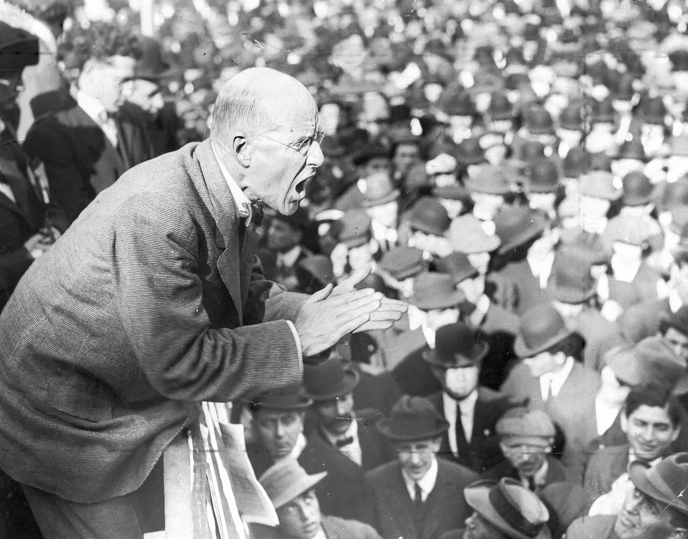

Content warning for discussions of pedophilia and child sexual abuse.
To be fair, when I first read the title of this book, I was stumbling around a site with a vast archive of literature (GoodReads); this title stuck out to me as one that was a bit more deranged than the books I usually come across. This derangement was something that drew me in, though, and I decided to give this a shot.
This chapter reads to me as written from the perspective of someone with misplaced anger, particularly in the case of the politics of the United States; a strong anger toward the "elite" but an allegiance with American conservatives/Republicans, despite such group supporting and being part of this "elite." From their view, the "elites" include the Democrats and the influence of the Israeli government/intelligence. In reality, though, it is both parties that have interests directly conflicting with the interests of the working masses, and it is both parties that are influenced by the ideas of the Israeli government (in terms of foreign policy).
Let me quickly make an important note: I am not saying "Israel" to refer to "Israeli citizens" as a whole, nor am I referring to "Jewish people". I am using "Israel" to strictly refer to the Israeli government; as of now, I criticize the Israeli government under Netanyahu. This criticism is not toward Israeli citizens as a whole; my criticism of Israel is also not an attack of Jewish people nor Judaism, as that would be antisemitic.
Back on topic: this misplaced anger bleeds through this chapter's very detailed and well-written discussion of pedophilia. Joachim Hagopian approaches this topic of pedophilia with a surprising amount of care and thoroughness, approaching it in a such a way that is quite controversial to many; this "way" that is controversial is the "way" where one views people suffering from pedophilic thoughts as humans and not generalizing all of them as criminals, freaks, etc. Sure, pedophilia is not something to be normalized, but destigmatization is a great way to encourage people suffering from such thoughts to seek help, and Hagopian covers this quite well.
However, this eloquent commentary is spoiled by this misplaced anger making early subtle appearances until fully exposing itself at the end of the chapter. Mentions of Pizzagate (while citing himself?) and referring to such as a "documented scandal" among many "others" was quite the red flag for me, but the alarm bells truly rang when I read Hagopian blaming the destruction of free speech (specifically, speech that is anti-LGBT) in the United States on the "Politically Correct Gestapo thought police." In the real world, of course, the State Department couldn't care less about cracking down on racist, homophobic, xenophobic, or transphobic rhetoric. Instead, they tend to focus more on suppressing anti-imperialist, (actual) left-leaning, and anti-capitalist rhetoric -- rhetoric that is truly anti-"elite". This actually documented suppression of ideas and revolutionary sentiment among common people was rampant in the Cold War era, but had its moments during World War I. For example, in the Cold War era, we saw at first "legal" but eventual violent crackdown on the Black Panther Party (BPP), through actions such as Governor Reagan's anti-BPP gun control and the assassinations of figures in the party such as Fred Hampton1. In World War I, we saw this with the arrest and imprisonment of Eugene V. Debs for opposing the military draft in a speech, despite beginning by saying2,
Eugene V. Debs delivering a speech in Canton, Ohio; this speech was the one that led to his arrest and imprisonment.
I realize that, in speaking to you this afternoon, there are certain limitations placed upon the right of free speech. I must be exceedingly careful, prudent, as to what I say, and even more careful and prudent as to how I say it. I may not be able to say all I think; but I am not going to say anything that I do not think.
The two examples above do not include conservative or right-wing ideologues being violently suppressed by all branches of the law; this is because conservative or right-wing ideologies (mostly) are not directly at odds with the ideology of the United States. This does not seem apparent to Hagopian, though. This ignorance of the author is only made clearer when he begins to get side-tracked and writes of his own takes on the Diagnostic and Statistical Manual from his own experiences as a mental health therapist. He calls the Manual "neither ... accurate nor fair" but rather
an artificial social and political construct elevated to an undeserving pedestal status, given far too much credence to pseudo-science dogma for sole benefit of the medical and psychiatric establishment and institutionalized hierarchical corruption.
It seems that Hagopian has forgotten the direction he took earlier in the chapter that made his commentary so great to read: rather than making many assertions without context/evidence, much evidence and interpretations of such evidence was presented. In contrast, after making these assertions about the Manual, there is little elaboration on his claims; all the reader is given is implications that doctors purposefully over-diagnose and/or over-medicate people in the name of Big Pharma, and that all conditions should not be treated as "a quick biochemical fix." While I agree that the treatment of mental conditions should never only consist of medication (therapy is quite the heavy lifter in terms of treatment), medication can still be quite the "fix" for many. Of course, Big Pharma is an industry depraved by greed, but this does not disprove the efficacy and use of many medications that have been, unfortunately, terribly price gouged by this broken industry.
Constant mentions of the "Illuminati government" only made me cringe while reading this. In completing this chapter, Hagopian references this "top 1%" oh-so-ominous power as being responsible for massive amounts of sex trafficking of children. While the initial sentiment is correct -- the richest people on the planet control the planet, and some seem to engage in these horrendous acts -- it is riddled with errors that break down the structure of Hagopian's ideas. The "top 1%" globally is not the oppressors of the masses; many earning ~$70,000 in the United States are struggling to live a comfortable life, but they still earn enough to put them in the top 1% globally3. This is why I do not enjoy using statistics loosely to refer to Hagopian's "elite"; instead, "capitalists" seems like a better word to use. Another error that kills any semblance of taking Hagopian seriously is his mention of these "elites" particpating in child sex trafficking to "strengthen their satanic power." I've truly no words on such a claim.
Writings like these are phenomenal examples of how, through cultural hegemony, the bourgeoisie is able to guide the frustration of the public elsewhere. Why be mad about capitalist exploitation when you could be mad at some of the capitalists for reasons quite disconnected from reality? Narratives like these only strengthen the two-party system in the United States, as both parties driven by capitalist interests seem to only disagree about social policy. Of course, the social policy they disagree on will only ever just affect the working public, as even despite 45/47th president Donald Trump's transphobic rhetoric, transgender millionaire Caitlyn Jenner was told by him that she could use any bathroom in the Trump Tower4. Odd, isn't it?
Ultimately, the erratic writing of this chapter has me drawn to read more of this book -- not out of genuine intellectual interest, but out of a very morbid curiosity. How worse could it get?
Further Reading
1 Aiken, Joshua. “What the Panthers Meant by Self-Defense: Race, Violence, and Gun Control.” Duke Center for Firearms Law, 9 Aug. 2022, firearmslaw.duke.edu/2022/08.
2 Debs, Eugene V. “Speech in Canton, Ohio.” Archives.gov, Documented Rights Exhibit, 16 June 1918, www.archives.gov/exhibits/documented-rights/exhibit/section3/detail/debs-speech-transcript.
3 Giving What We Can. “How Rich Am I?” Givingwhatwecan.org, Giving What We Can, 2024, www.givingwhatwecan.org/how-rich-am-i. see their methodology and data sources.
4 Zaru, Deena. “Caitlyn Jenner Takes Trump up on Bathroom Offer.” CNN, 28 Apr. 2016, www.cnn.com/2016/04/28/politics/caitlyn-jenner-bathroom-trump-tower-donald-trump.